Обзор
Учебные файлы
Если вам нужны файлы для справки, загрузите и разархивируйте файлы учебных пособий, как описано на странице эта страница.
Предварительные требования для этого урока
Прежде чем продолжить изучение этого руководства, убедитесь, что вы прочитали и поняли следующее:
Настройка сцены 3ds Max и экспорт в CRYENGINE
Целью этого раздела является создание полицилиндра, фиктивной полисетки треугольника и двух скелетных иерархий в 3ds Max. В отличие от конвейера Maya, мы можем оставить иерархию сцен как есть, без реорганизации нашей сцены на группы и cryExportNodes. В конце мы можем сразу экспортировать в файлы определенных типов CRYENGINE (CHR и SKIN).
Полицилиндр, который мы делаем, действует как геометрия конского хвоста, который прикреплен к костяной цепочке. Другая иерархия костей действует как упрощенный скелет персонажа, к которому будет прикреплена иерархия костей с сеткой «конский хвост». В конце концов, мы имеем вторичный цепочка из костей хвоста пони расширение тот первичный скелет персонажа.
3ds Max Местоположение файла сцены
Настройте сцену 3ds Max и сохраните ее в соответствующем каталоге, например YOUR_PROJECT_FOLDER\Assets\Objects\current_tutorial. Убедитесь, что папка содержит сцену 3ds Max и экспортированные файлы для CRYENGINE являются подпапка папки вашего проекта. В нашем случае мы сохранили файлы сцены 3ds Max в этом каталоге:
YOUR_PROJECT_FOLDER\Активы\Объекты\jigglebone_tutorial_max
Создайте две иерархии и прикрепите к ним обложки геометрических объектов.
В этом уроке мы создадим полицилиндр и обведем его иерархией костей. Эту иерархию костей можно использовать для два совершенно разных варианта использования:
- свободно свисающая, гибкая иерархия костей:
- конский хвост long, выходящий из затылка,
- резиновый шланг или что-нибудь похожее на веревку,
- железная цепь с несколькими звеньями,
и т. д.
-> кости, которые сгибаются/вращаются во время симуляции - мультяшная, растянутая иерархия костей:
- антенна, торчащая из головы робота или насекомого,
- завязанные волосы цвета short,
- букет цветов,
и т. д.
-> кости, которые растягиваются/перемещаются во время симуляции
I. Создание иерархии костей хвоста и полицилиндра:
- Начнем с создания вторичного скелета, костей хвоста. Сначала переключитесь на ортогональную переднюю область просмотра 3ds Max, нажав Ф. Используйте систему костей 3ds Max, чтобы создать прямую иерархию, направленную вниз (мировое отрицательное Z). Мы решили использовать 7 костей (и узел конечной кости), поэтому позже в списке костей модификатора Skin у нас будет 7 костей. Переименуйте кости для более четкой иерархии.
- (Файл: ponytail_skeleton_start.max)
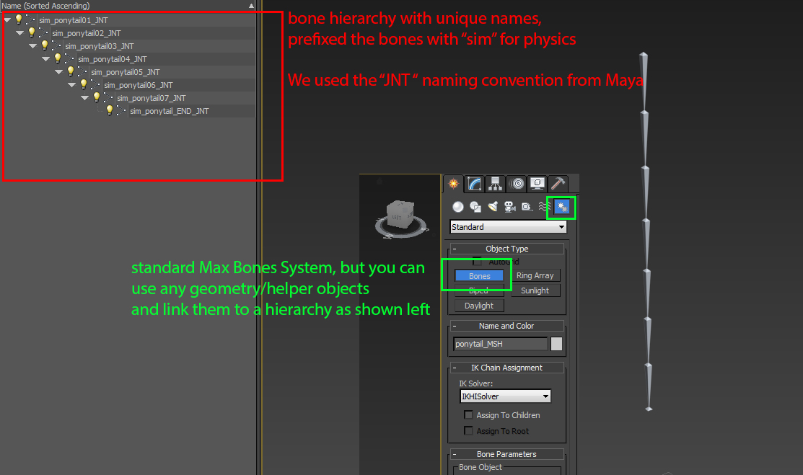
Рис1: Чистая именованная иерархия костей. - 3ds Max расположит ваши кости, как показано на рисунке ниже, если вы нарисуете кости из ортогонального окна Front Viewport. В связанном исходном файле. Мы также добавили несколько вспомогательных объектов штатива для визуализации вращения по локальной оси каждого костного объекта. Вы можете игнорировать вспомогательные объекты штатива или удалить их, если сцена кажется загроможденной.
(Файл: ponytail_skeleton_step01.max)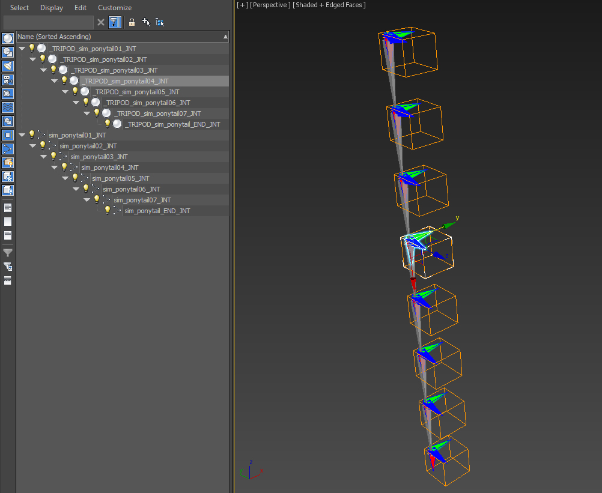
Рис. 2: Изображение, показывающее иерархию «конского хвоста» с изготовленными на заказ вспомогательными объектами штатива. - Создайте полицилиндр с достаточным количеством подразделений для хорошей деформации. Это геометрия конского хвоста, к которой на более позднем этапе будет добавлен модификатор «Skin».
(Файл: ponytail_skeleton_step02.max)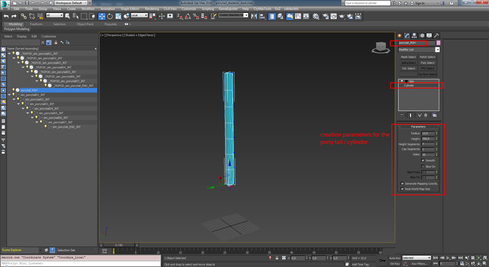
Рис.3: Показаны параметры создания геометрии хвоста манекена. Ничего, что могло бы продемонстрировать ваши потрясающие навыки моделирования ;-) !
II. Создание упрощенного целевого (первичного) скелета, который будет расширен за счет (вторичного) скелета «конский хвост»:
Мы хотим сохранить наш основной скелет как можно более абстрактным. Создайте 3 объекта: корень, таз и кость головы. Переименуйте костные объекты и расположите их в соответствии с образцом сцены/изображения, показанным ниже. Мы создали несколько вспомогательных объектов штатива, чтобы вы могли увидеть их окончательную локальную ориентацию.
Корень любой иерархии со скинами должен соответствовать мировой ориентации по умолчанию. (Перейдите к виду сверху, положительная ось X должна указывать вправо, положительная ось Y должна указывать вверх.)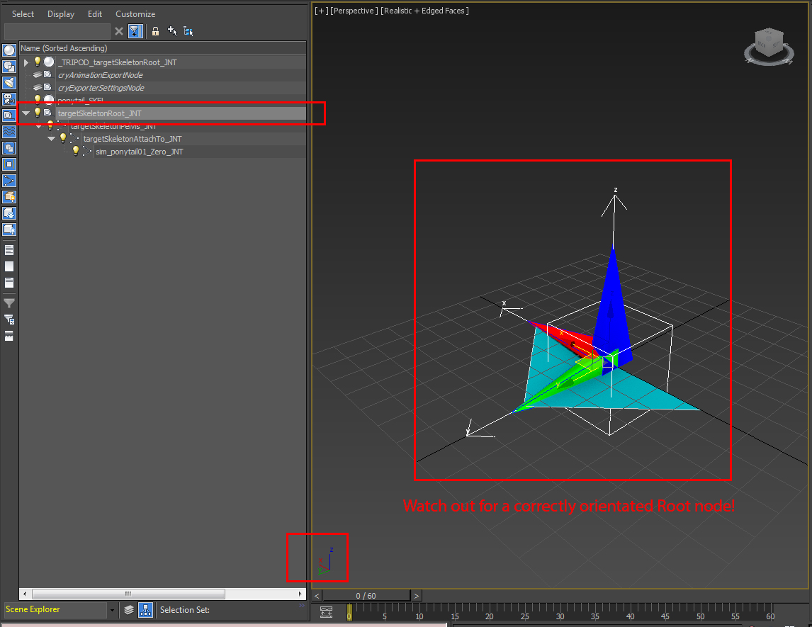
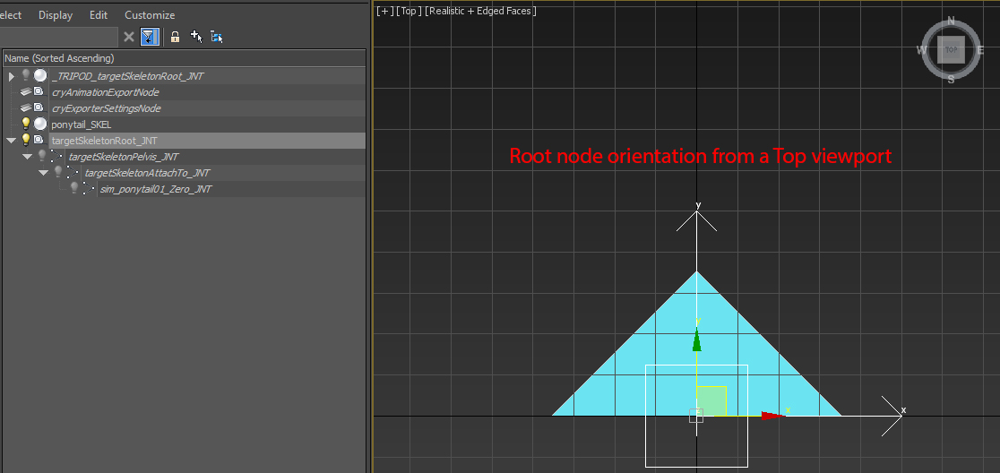
Pic4a и b: Корень соответствует мировой ориентации по умолчанию перед экспортом.Если ориентация объекта со скином не соответствует требованиям CRYENGINE, он не будет жаловаться, пока вы не попытаетесь загрузить его как CHR в Character Tool.
- Создайте объект треугольной сетки. Это фиктивный объект-треугольник для файла CRYENGINE *.CHR. Он содержит все данные иерархии базового скелета.
(Файл: ponytail_skeleton_step03.max)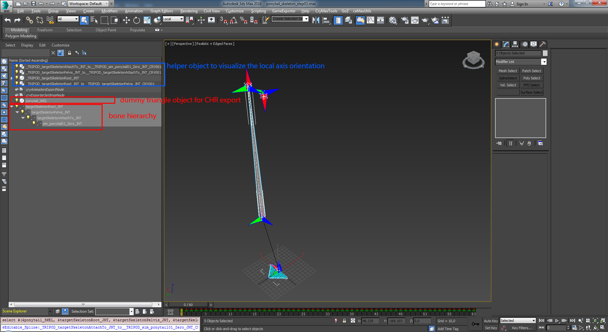
Рис5: Основной/базовый скелет для присоединения хвоста. Также показана фиктивная треугольная сетка. - Перейдите на панель «Изменить» и добавьте модификатор «Кожа» к фиктивной треугольной сетке и включите в ее список костей только кость «таз».
(Файл: ponytail_skeleton_step03.max)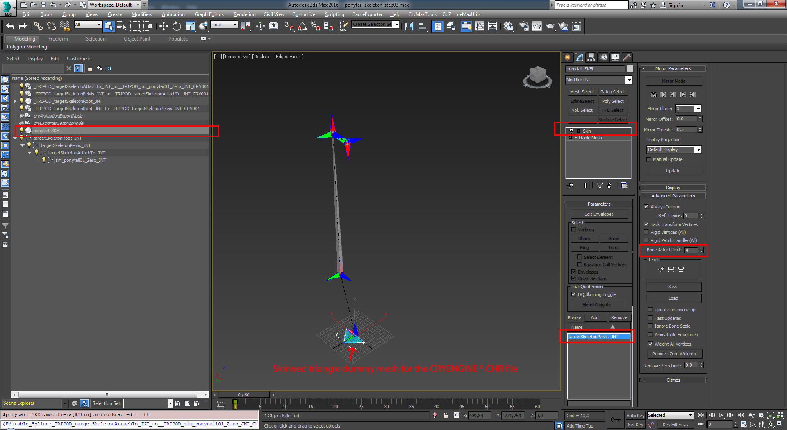
Рис.6: Треугольная сетка со шкурой как объект CRYENGINE CHR. - Экспортируйте фиктивную сетку треугольника, мы дали ей имя «ponytail_SKEL» как файл типа CRYENGINE *.CHR.
(Файл: ponytail_skeleton_step03.max или ponytail_skeleton_CHR_export.max)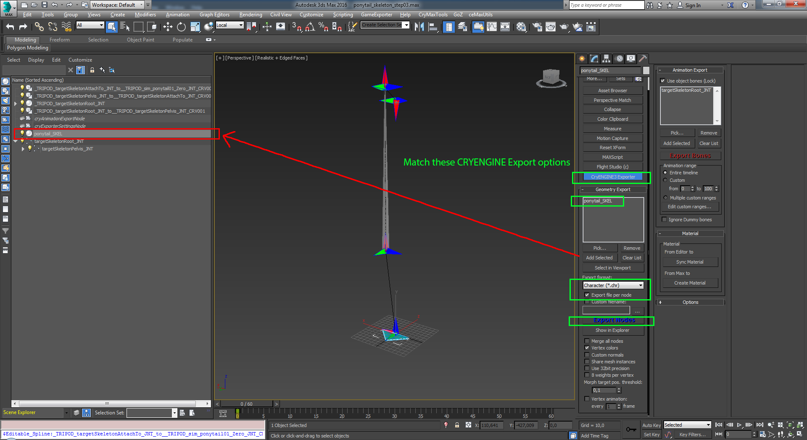
Рис7: Экспортируйте базовый скелет в файл *.CHR. - Мы сделали простую цикличную анимацию для основного скелета, чтобы управлять физикой «конского хвоста». Обратитесь к справке и руководствам Autodesk 3ds Max, чтобы узнать, как создавать анимацию.
(Файл: ponytail_skeleton_CHR_export.max)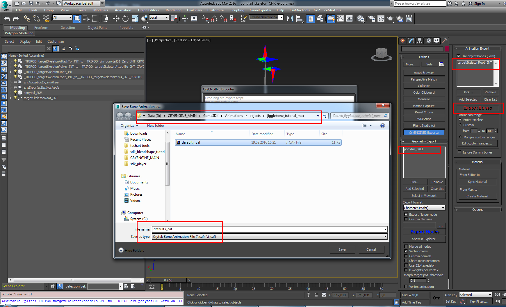
Рис.8: Экспорт анимации «по умолчанию» в файл *.I_CAF / *.CAF.
На следующих шагах мы вернемся к конскому хвосту и подготовим его к экспорту.
III. Добавьте модификатор Skin к полицилиндру и нанесите на него иерархию костей хвоста.
Откройте файл ponytail_skeleton_step02.макс.
Выберите меш цилиндра/конского хвоста и добавьте модификатор Skin. Добавьте 7 костей хвоста пони в список костей модификатора «Skin».
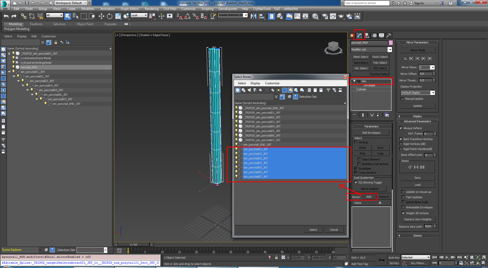
Рис.9: Очистите сетку «конский хвост»/полицилиндр.Настройте вес скина, перемещая конверты и их радиусы, или используйте функцию 3ds Max 2016+ «Воксель» / «Тепловая карта» в модификаторе скина, чтобы быстро распределить вес скина.
(Файл: ponytail_skeleton_step04.max)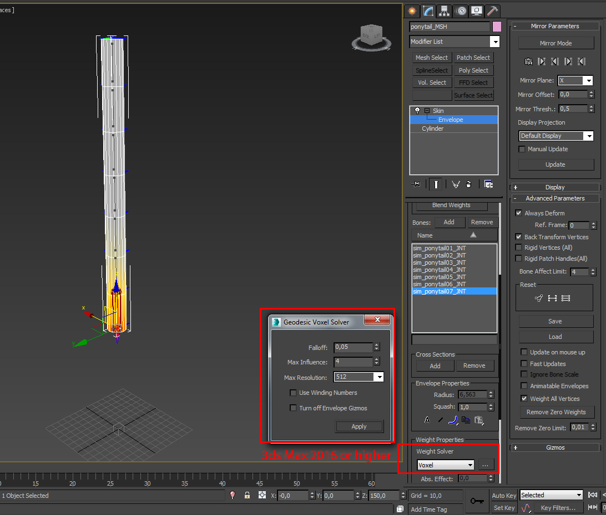
Рис10: Вес скинаМы объединим сцену базового скелета со сценой с хвостом и свяжем вторичный скелет с базовым скелетом. Именно так вы обычно работаете, когда строите вторичный скелет для расширения своей базы, сохраняя оба скелета в двух файлах и не смешивая их. Откройте Файл: ponytail_skeleton_step04.max и «Объединить» базовый скелет из Файл: ponytail_skeleton_CHR_export.max к этому:
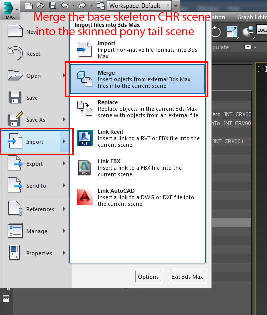
фото11: используйте «Объединить» и просто перезапишите все, если будет предложено.- Поскольку мы используем «Skin Attachment» для геометрии «конского хвоста», мы должны каким-то образом указать CRYENGINE, где расширяющийся скелет будет прикреплен к базовому скелету CHR:
Соедините корневой сустав «конского хвоста» с узлом крепления базового скелета: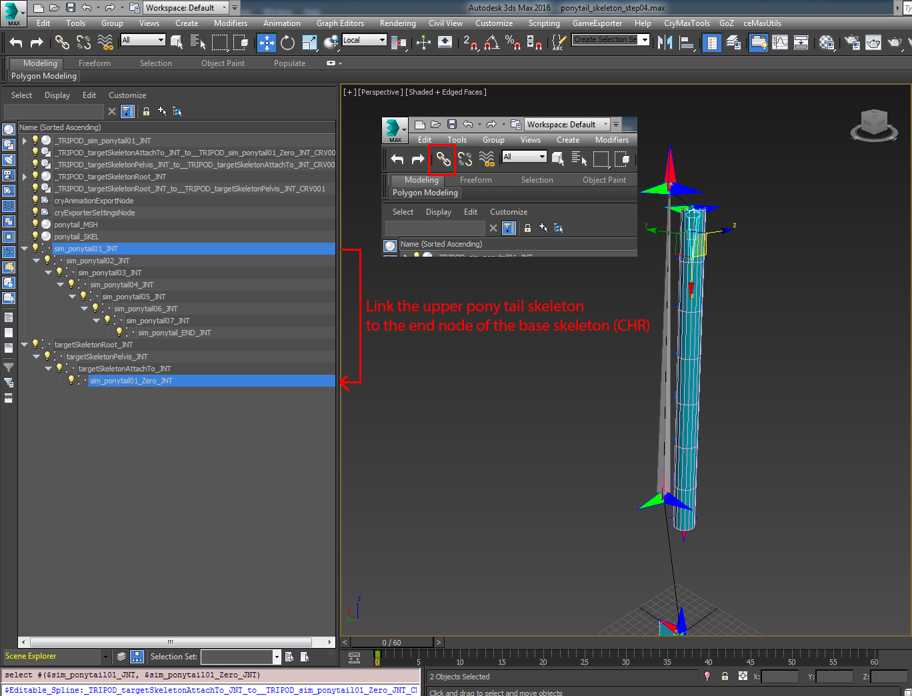
Рисунок 12: Соедините две иерархии вместе.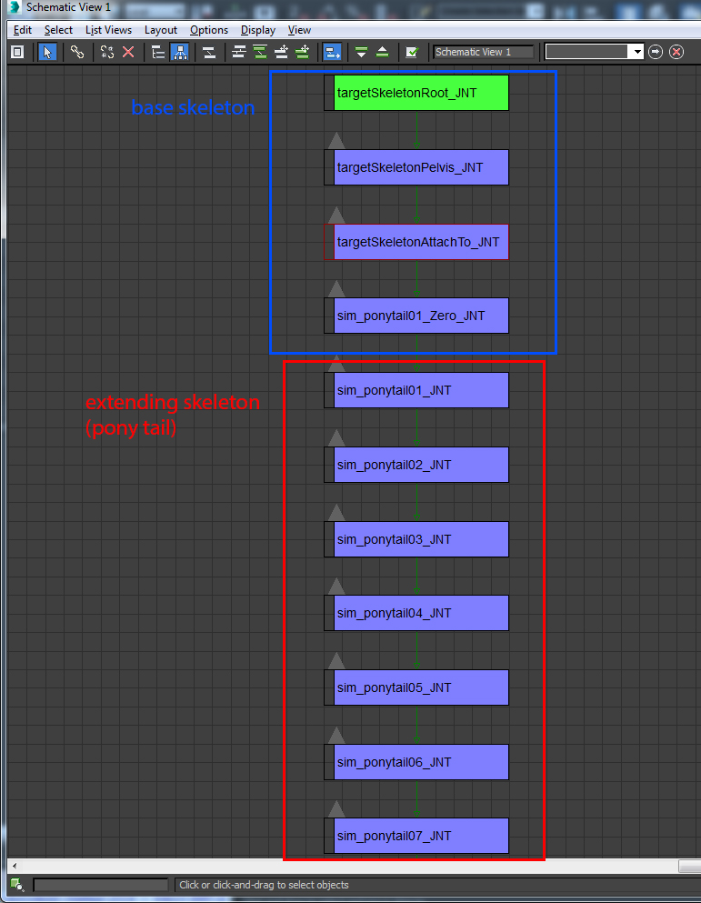
Рис.13: Схематическое изображение двух связанных иерархий. - Экспортируйте сетку «конский хвост» в файл CRYENGINE *.SKIN со следующими настройками:
(Файл: ponytail_skeleton_SKIN_export.max)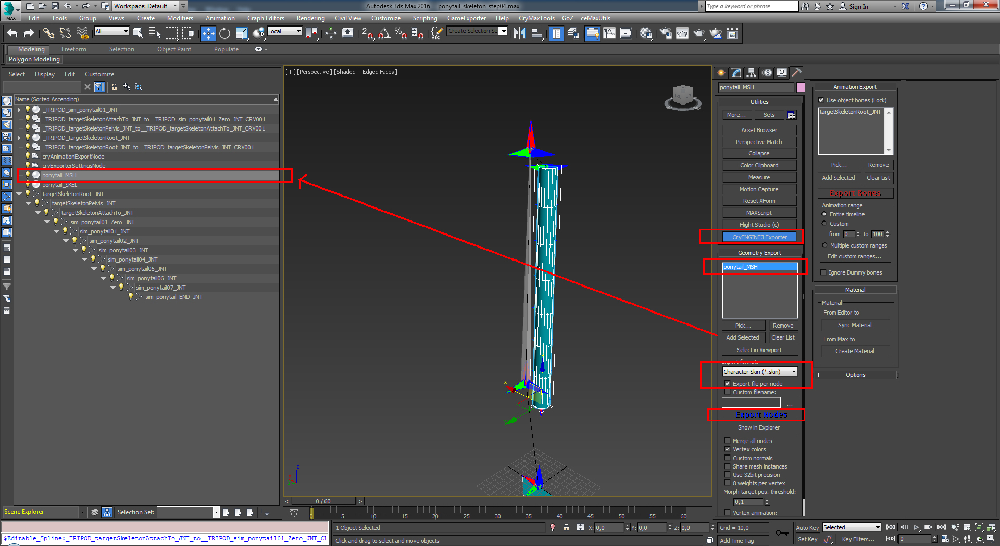
Рис.14: Тип файла экспорта должен быть установлен на *.SKIN.
На этом раздел 3ds Max завершается. Следующими шагами будет импорт ресурсов в Character Tool пользователя CRYENGINE.